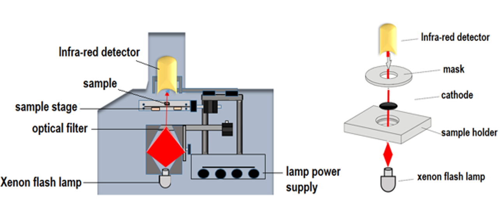
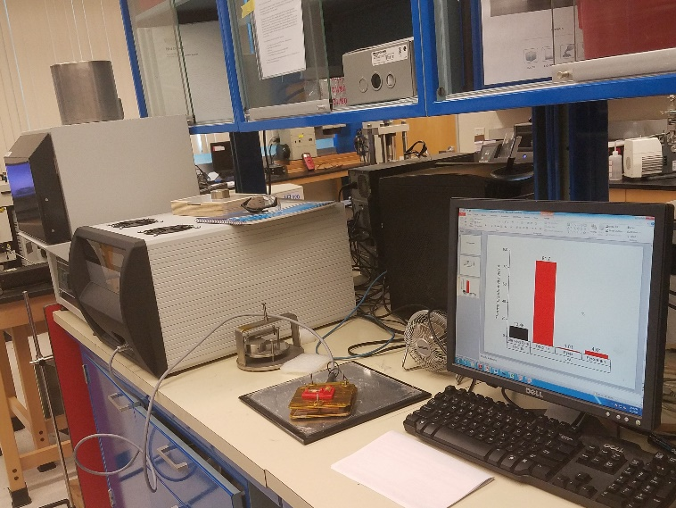
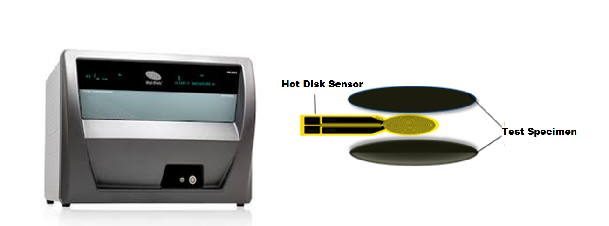
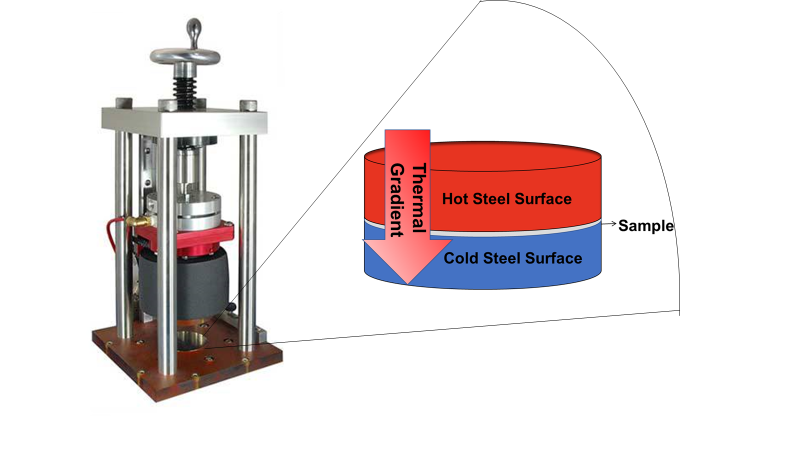

Thermal Characterization of Materials
Importance of Thermal Characteristics of Materials
The increasing importance of thermal properties of materials is explained both by practical needs and fundamental science. Heat removal has become a crucial issue for continuing progress in electronic industry owing to increased levels of dissipated power. The search for materials that conducts heat well became essential for design of the next generations of integrated circuits and three-dimensional electronics. Similar thermal issues have been encountered in optoelectronic and photonic devices. From another side, thermoelectric energy conversion requires materials, which have strongly suppressed thermal conductivity. The material’s ability to conduct heat is rooted in its atomic structure, and knowledge of thermal properties can shed light on other materials’ characteristics. Thermal properties of materials change when they are structured on a nanometer scale. Nanowires do not conduct heat as well as bulk crystals due to increased phonon - boundary scattering or changes in the phonon dispersion. At the same time, theoretical studies of heat conduction in two-dimensional (2D) and one-dimensional (1D) crystals revealed exotic behavior, which lead to infinitely large intrinsic thermal conductivity. Carbon materials, which form a variety of allotropes, occupy a unique place in terms of their thermal properties. The room temperature thermal conductivity of different allotropes of carbon span an extraordinary large range – of over five orders of magnitude – from the lowest of ~ 0.01 W/mK in amorphous carbon to the highest of above 2000 W/mK in graphene.
Methods of measuring thermal conductivity can be divided into two groups: steady-state and transient. In transient methods, thermal gradient is recorded as a function of time, enabling fast measurements of the thermal diffusivity over large temperature ranges. Usually, the specific heat and mass density have to be determined independently in these methods to calculate the thermal conductivity. If the thermal conductivity determines how well materials conduct heat, thermal diffusivity tells how fast materials conduct heat. Although many methods rely on electrical means for supplying heating power and measuring the temperature rise, there are other techniques where the power is provided with light. In many steady-state methods, temperature is measured by thermocouples.
Thermal Conductivity of Graphene

Owing to its 2D nature, the thermal conductivity of graphene has a number of unique features. The details of thermal properties of graphene can be found in this Nature Materials review. The first experimental study of heat conduction in graphene was conducted by Balandin Group in 2007. It was made possible by developing an optothermal Raman technique (see Figure). The heating power was provided with laser light focused on a suspended graphene layer connected to heat sinks at its ends. Temperature rise in response to the dissipated power was determined with a micro-Raman spectrometer. The G peak in graphene’s Raman spectrum exhibits strong temperature dependence. Figure shows the temperature shift of the G peak in Raman spectrum of bilayer graphene. The inset shows that the optical absorption in graphene is a function of the light wavelength due to many-body effects. The calibration of the spectral position of the G peak with temperature was performed by changing the sample temperature while using very low laser power to avoid local heating. The calibration curve allows one to convert a Raman spectrometer into an “optical thermometer”. During the thermal conductivity measurements, the suspended graphene layer is heated by increasing laser power. Local temperature rise in graphene is determined as from the shift of the G peak spectral position. The amount of heat dissipated in graphene can be determined either via measuring the integrated Raman intensity of the G peak, as in the original experiments in Balandin Group, or by a detector placed under the graphene layer, as in the follow up experiments. Since optical absorption in graphene depends on the light wavelength and can be affected by strain, defects, contaminations and near-field or multiple reflection effects for graphene layers suspended over the trenches, it is essential to measure absorption under the conditions of the experiment. A correlation between the temperature rise and dissipated power for graphene samples with a given geometry gives the thermal conductivity value via solution of the heat diffusion equation. Large sizes of graphene layers ensure the diffusive transport regime. The suspended portion of graphene is essential for determining the dissipated power, forming 2D heat front propagating toward the heat sinks, and reducing thermal coupling to the substrate. The method allows one to monitor temperature of silicon and silicon oxide layer near the trench with suspended graphene from the shift in the position of the silicon and silicon oxide Raman peaks. The Balandin Group optothermal Raman technique for measuring the thermal conductivity of graphene is a direct steady-state method. It has been extended to other suspended films, e.g. graphene films, and other 2D materials with pronounced temperature dependence of Raman signatures. Read more about the optothermal Raman technique and thermal conductivity of graphene in the Reports on Progress in Physics review.
Measurements with the "Laser Flash" Technique
The measurements of the thermal conductivity can be performed with the transient “laser flash” technique (LFT, NETZSCH LFA), located in POEM. The LFT technique uses a xenon flash lamp, which heats the sample from one end by producing shots with a certain energy. The integrated automatic sample changer allowed unattended analysis of up to four samples. The temperature rise is determined at the back end with the nitrogen-cooled infra-red detector. The output of the temperature detector is amplified and adjusted for the initial ambient conditions. The recorded temperature rise curve is the change in the sample temperature resulting from the firing of the flash lamp. The magnitude of the temperature rise and the amount of the light energy are not required for a diffusivity determination; only the shape of the curve is used in the analysis. From the analysis of the resulting temperature versus – time curve the thermal diffusivity can be determined. For the specific heat measurement, the magnitude of the temperature rise of an unknown sample is compared to that of the reference calibration sample. Thermal conductivity is determined from the measured thermal diffusivity and specific heat (see Figures).
LFA 447 Specifications
| Thermal conductivity | 0.1 W/(mK) to 2 000 W/(mK) |
| Thermal diffusivity | 0.01 mm2/sec to 1 000 mm2/sec |
| Flash source | Xenon Flash Lamp Wavelength: 150 nm to 2 000 nm |
| Detector type | InSb Infrared detector |
| Reproducibility | Thermal diffusivity: ±2% Specific heat: ±3% |
| Accuracy | Thermal diffusivity: ±3% Specific heat: ±5% |
| Temperature range (with circulator) | Room temperature to 300°C |
| Sample size | Round samples up to 25.4 mm (1 inch) in diameter 6 mm / 8 mm / 10 mm / 12.7 mm square samples No sample may exceed 3 mm (0.12 inches) in thickness |
Measurements with the "Hot Disk" Technique
The thermal conductivity and diffusivity of materials can be simultaneously measured using the transient plane source technique (TPS 3500, Hot Disk), located in POEM. This instrument can measure the thermal properties of bulk materials and thin-films. For measurements performed on this instrument, an electrically insulated flat nickel sensor, possessing a radius ranging from of 0.5 mm (for small samples) to 30 mm, is placed in between two identical parts of the same sample. The sensor acts as both a heat source and temperature probe. Thermal properties of the composites are determined by recording the temperature rise as a function of time. The time and the input power parameters are iteratively selected so that the heat flow is within the composite boundaries and the temperature rise of the sensor is not influenced by the outer boundaries of the composite. The system is calibrated by measuring reference samples with known thermal properties (see Figure).
Hot Disk TPS 3 500 Specifications
| Thermal conductivity | 0.005 W/(mK) to 1 800 W/(mK) |
| Thermal diffusivity | 0.01 mm2/sec to 1 200 mm2/sec |
| Heat capacity | Up to 5 MJ/(m3K) |
| Reproducibility | ±1% |
| Accuracy | ±5% |
| Sample size | 0.5 mm by 2 mm diameter or square for bulk testing 0.043 mm by 8 mm diameter or square for slab testing 5 mm by 2.5 mm diameter or square for one-dimensional testing 0.01 mm by 22 mm diameter or square for thin-film testing |
Measurements with the TIM Tester
To measure the thermal conductivity of thermally conductive pastes, solids and phase change materials used in electronic packaging, one can use the TIM Tester 1400 (Analysis Tech Inc.), located in POEM. This instrument has been designed to conform to the test method ASTM D 5470 but has also been modified to employ a thermal structural function analysis to optimize the speed and accuracy of each measurement (see Figure). This standard is based on an ideal heat conduction between two parallel surfaces which are separated by a sample of a uniform thickness. These two parallel surfaces are fabricated from steel with a certain roughness. The heat source is provided by electrical heaters and controlled via a fluid circulator. The change in temperature of the steel surfaces and sample interface is measured by multiple thermal couples embedded in the steel. The thermal gradient imposed on the sample by the temperature difference between the two steel surfaces causes the heat to flow uniformly across the sample in the direction perpendicular to the test surfaces. The thermal impedance of the sample, including the total contact resistance, is then measured as the change in temperature across the mating surfaces divided by the provided heat. To calculate the actual thermal conductivity of the sample, the total thermal impedance is measured multiple times at a different sample thickness. The thermal impedance can then be plotted as a function of sample thickness. The intercept of line of best fit of this plot will yield the total contact resistance of sample and its mating surfaces and the inverse of the slope will yield the actual thermal conductivity of the sample.
TIM Tester 1 400 Specifications
| Sample size | Diameter: 33 mm Thickness: 0-20 mm |
| Sample resistance range | 0.01 K/W - 8 K/W |
| Sample temperature range | 20°C - 130°C |
| Contact pressure range | 10 - 170 psi (100 - 1 100 kPa) |
| Contact pressure accuracy range | ±5 psi (40 kPa) |
| Sample thickness measurement accuracy | ±25 μm |
| Pre-heat temperature range (for Phase Change Materials) | 35°C - 70°C |